Un cliente o proveedor entró en insolvencia y mi crédito está comprometido.

Insolvencia y derecho corporativo: somos la voz del acreedor.
Somos especialistas en la defensa del acreedor, con soluciones potenciadas por tecnología propia que anticipa, agiliza y permite recuperar activos con precisión.
¿Es acreedor y se enfrenta a alguno de estos riesgos?
Necesito entender qué posibilidades reales tengo de recuperar mi cartera.
Busco una firma que represente mis intereses durante todo el proceso.
¿Qué hace AAA?
Defendemos exclusivamente los intereses del acreedor.
No representamos al deudor.
Anticipamos riesgos, protegemos el crédito del acreedor y maximizamos las posibilidades de recuperación, incluso en los escenarios más complejos y en diferentes sectores de la economía.
Ilustración del proceso — pendiente de definición
Cómo intervenimos
Soluciones jurídicas para proteger, normalizar y recuperar activos
01
Defensa de acreedores en insolvencia
Protegemos los derechos del acreedor durante procesos de insolvencia empresarial y de persona natural.
02
Normalización de activos
Diseñamos estrategias jurídicas para proteger y recuperar activos.
03
Derecho corporativo
Acompañamos decisiones jurídicas que fortalecen la continuidad y estabilidad empresarial.
¿Por qué AAA?
Más que asesoría jurídica, construimos confianza durante todo el proceso.
Infraestructura para atención masiva.
Equipo especializado.
Tecnología propia (ADY).
Seguridad de la información.
Compliance.
Cobertura nacional.
Sectores de experiencia
Experiencia especializada en los sectores donde la recuperación del crédito exige mayor conocimiento técnico.
Trabajamos con organizaciones de los sectores financiero, fintech, solidario, público, salud, cajas de compensación, construcción e inmobiliario, y comercio y consumo, comprendiendo sus retos jurídicos y operativos.
Ver nuestra experiencia →
Financiero y Fintech
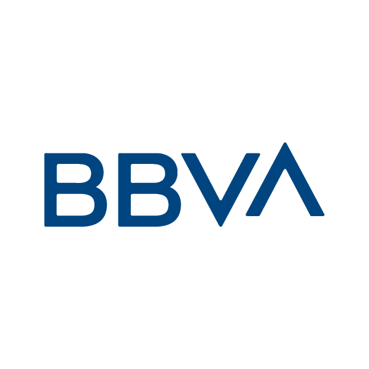
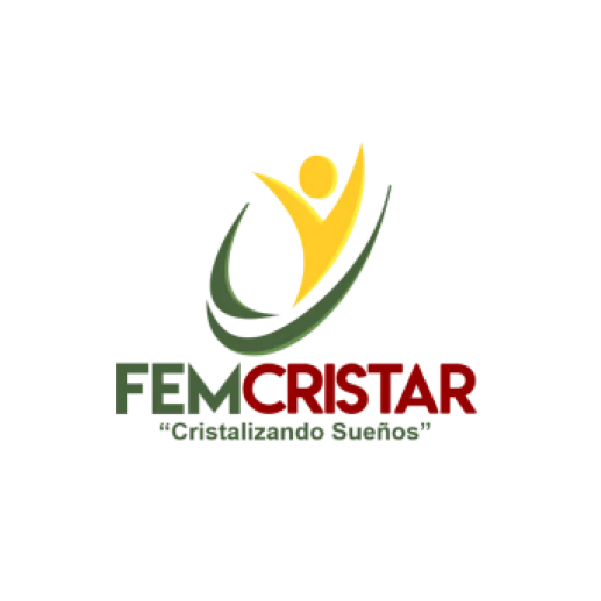
Solidario
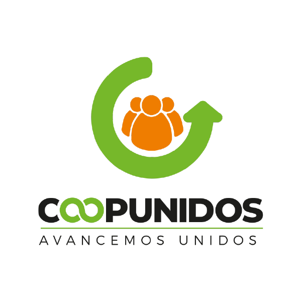
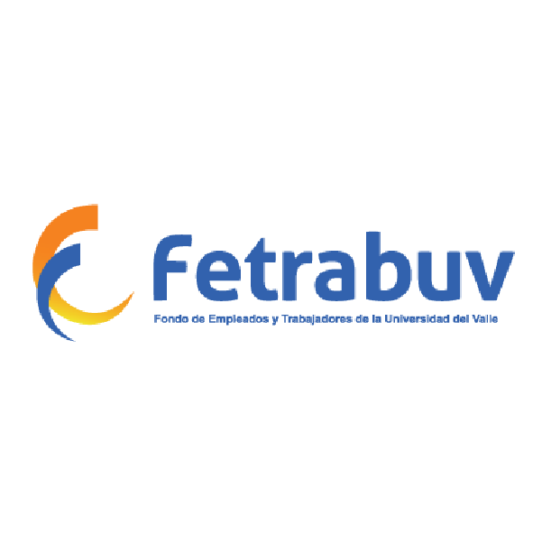
Sector público
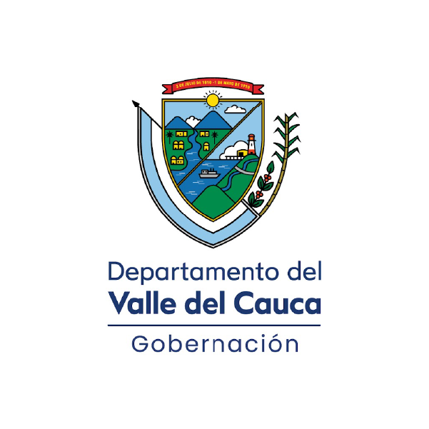
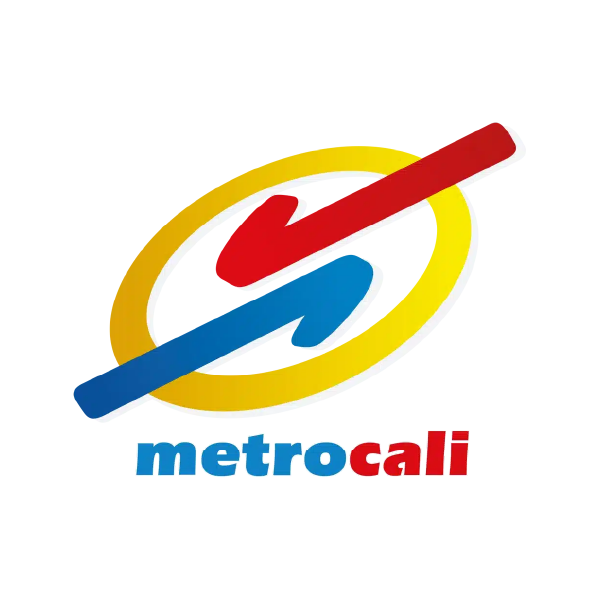
Salud y cajas de compensación
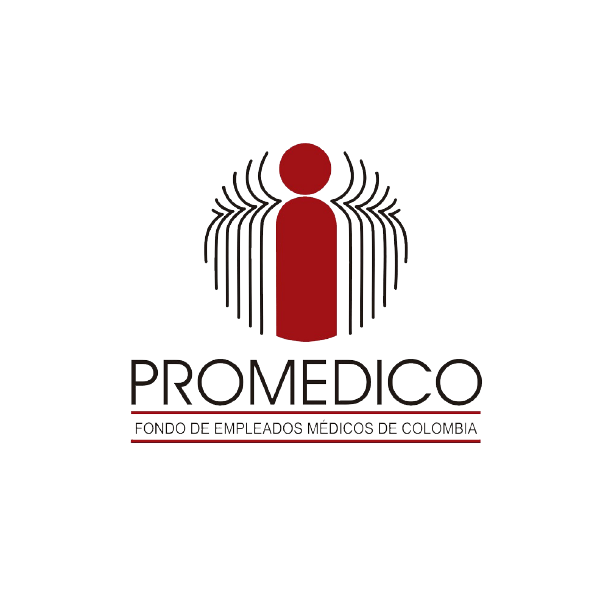
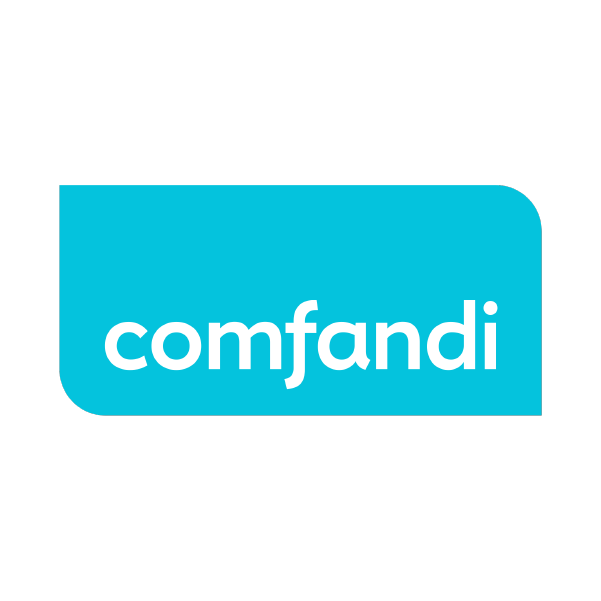
Construcción e inmobiliario
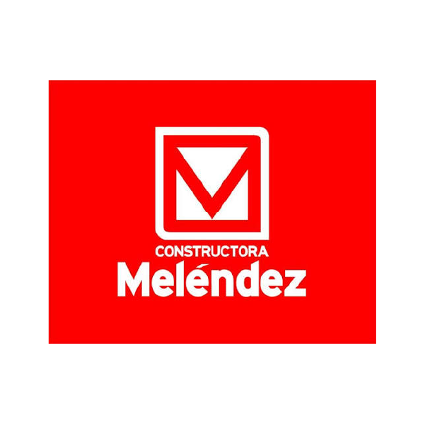
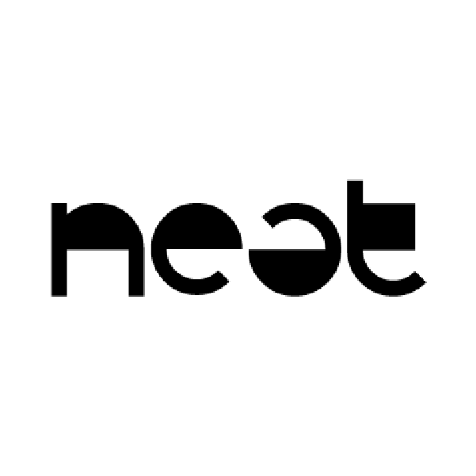
Comercio y consumo
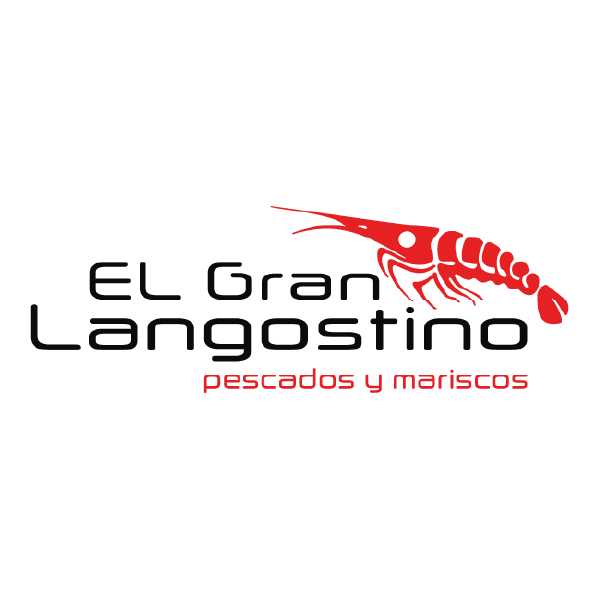
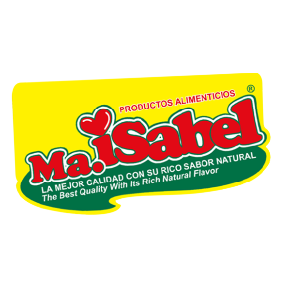
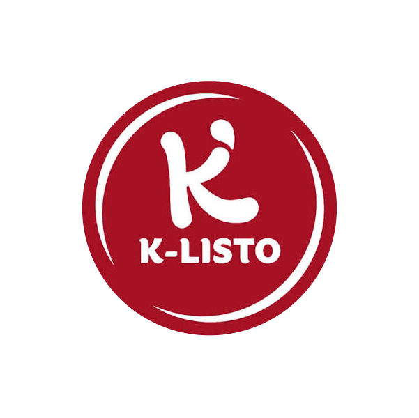
En cifras
Resultados que respaldan nuestro trabajo.
Casos gestionados
Clientes atendidos
Cartera recuperada
Casos de éxito
La confianza se construye con resultados.
Dimensión humana
Detrás de cada proceso hay un equipo especializado.
Trabajamos con rigor técnico y cercanía real.
IMG-03 — pendiente de material del cliente

Conversemos sobre su caso.
Si enfrenta un proceso de insolvencia o necesita fortalecer la protección de su cartera, nuestro equipo está listo para acompañarlo.
Hablemos de su caso